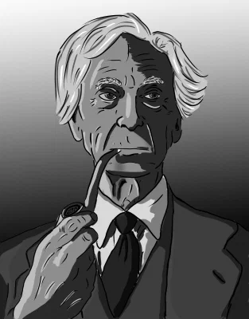

Большинство городов-государств контролировало ближайшие к ним земли. Те, кто жил вне города, могли возделывать поля, но правительственная власть была сосредоточена в городе. Там, где для этого было поле деятельности, как, например, в демократических государствах, участие в общественных делах было всеобщим среди горожан. Человеком, который не интересовался политикой, были недовольны и называли "идиотом", что по-гречески дословно означает "занятый личными интересами"